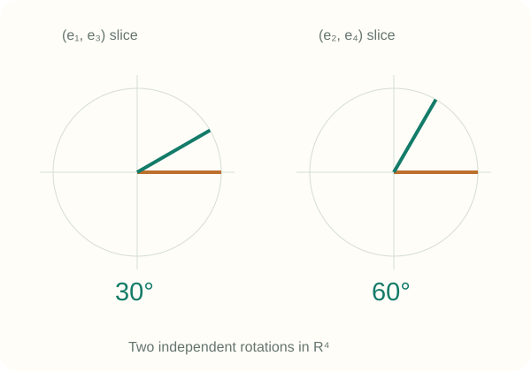
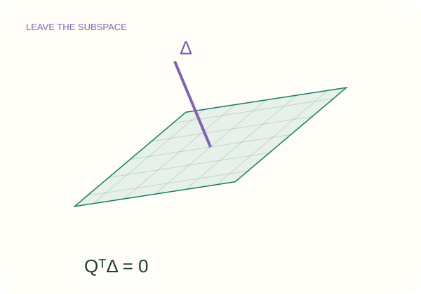
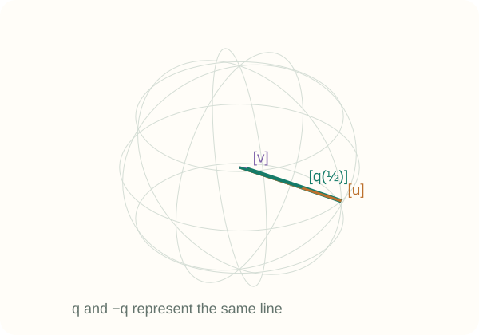
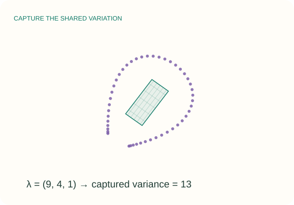
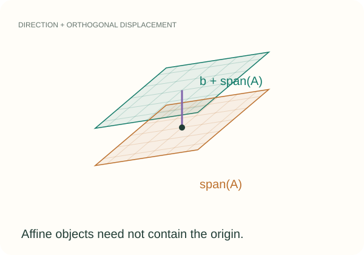
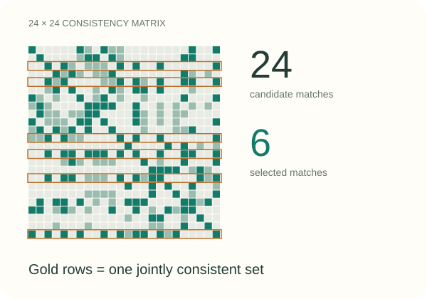

GEOMETRY / INTERACTIVE LECTURE
Grassmannian manifold
Visual intuition, graduate-level mathematics, and a data-association case study.
A space
of subspaces.
When a line, plane, or learned subspace
becomes a single geometric point.

29 SLIDES / FIVE LIVE EXPERIMENTS
Includes Lusk & How (2022):
global association of 3-D lines and planes.
Handbook · EAS 1998
01 / 29
THE ROUTE
From geometry to global matching.
Choose a chapter, or use the arrow keys to follow the story.
01
Bases, projectors, and quotient geometry
02
Principal angles and distance conventions
03
Tangents, geodesics, logarithms, retractions
04
PCA as a Grassmann optimization problem
05
The requested paper and a synthetic demo
06
A formula sheet and primary references
Handbook · EAS 1998
02 / 29
01 / THE OBJECT
A point can represent an entire plane.
Fix the dimension k. Let the subspace vary.
THE REAL GRASSMANNIAN
\[\mathrm{Gr}(k,n)=\{\mathcal S\subset\mathbb R^n:\dim\mathcal S=k\}\]A point is a linear subspace, not an individual vector in it.
All subspaces contain the origin.
Our notation: k first, ambient n second. We assume 0 < k < n.
Handbook · EAS 1998
03 / 29
01 / INVARIANCE
Change the basis. Keep the point.
The coordinates inside a subspace are not part of its identity.
AN ENTIRE EQUIVALENCE CLASS
\[Q^\top Q=I_k,\qquad [Q]=\{QO:O\in O(k)\}\]Rotations, reflections, and column sign flips preserve the column space.
In the lab, rotate the arrows and watch the plane remain fixed.
Static example: a 90° basis rotation gives ‖Q − QO‖F = 2; the subspace distance is 0.
Handbook · EAS 1998
04 / 29
01 / QUOTIENT GEOMETRY
Remove the degrees of freedom of the basis.
Stiefel keeps a frame. Grassmann keeps only its span.
THE MATHEMATICAL STATEMENT
\[\mathrm{Gr}(k,n)=\mathrm{St}(k,n)/O(k),\qquad \dim\mathrm{Gr}(k,n)=k(n-k)\]
COUNT THE PARAMETERS
\[nk-\frac{k(k+1)}2-\frac{k(k-1)}2\]Orthonormality removes k(k+1)/2 parameters; internal rotations remove k(k−1)/2.
READ THE QUOTIENT
Each orthonormal frame belongs to a whole family QO.
The quotient identifies that family with one subspace. Gr(2,3) has dimension 2.
Handbook · EAS 1998
05 / 29
01 / A UNIQUE REPRESENTATION
The projector forgets the basis automatically.
Every k-dimensional subspace has exactly one orthogonal projector.
THE MATHEMATICAL STATEMENT
\[P=QQ^\top=(QO)(QO)^\top,\quad P^2=P=P^\top,\quad\operatorname{tr}P=k\]
WHAT P DOES
\[\widehat x=Px,\qquad x-Px\perp\operatorname{span}(Q)\]Px is the least-squares approximation of x within the subspace.
WHAT IT COSTS
Q stores nk entries; P stores n² entries.
P is unique, but an orthonormal basis is usually cheaper computationally.
Handbook · EAS 1998
06 / 29
01 / SMALL EXAMPLES
Lines identify opposite directions.
A sphere picture needs an antipodal identification.
Gr(1,2) AND Gr(1,3)
\[[u]=[-u],\qquad\|u\|=1\]Gr(1,2): unoriented lines in a plane.
Gr(1,3) ≅ ℝP²: sphere points u and −u represent the same line.
Gr(2,3)
A plane through the origin is determined by its normal direction.
Normals n and −n describe the same plane.
Offset planes need affine geometry.
Handbook · EAS 1998
07 / 29
02 / THE WRONG DIFFERENCE
Matrix distance can report a change that never happened.
Two representatives may look far apart while the subspace is identical.
COMPARE Q AND −Q
\[\|Q-(-Q)\|_F=2\sqrt{k}\]\[QQ^\top=(-Q)(-Q)^\top\]Basis distance is sensitive to signs and rotations.
COMPARE THE SUBSPACES
\[d_g([Q],[-Q])=0\]Use principal angles or projector distances.
Never report raw basis error as subspace error without alignment.
Handbook · EAS 1998
08 / 29
02 / PRINCIPAL ANGLES
Find directions that align best.
The singular values of QᵀY remove both choices of basis.
SVD → ANGLES
\[Q^\top Y=U\operatorname{diag}(\sigma_i)V^\top\]\[\theta_i=\arccos\sigma_i\]\[0\leq\theta_1\leq\cdots\leq\theta_k\leq\pi/2\]The corresponding principal vectors are columns of QU and YV.

Handbook · EAS 1998
09 / 29
02 / DISTANCES
Two useful distances. Two different geometries.
The normalization and angle units belong in the formula.
INTRINSIC AND PROJECTOR DISTANCE
\[d_g=\sqrt{\sum_i\theta_i^2}\]\[d_p=\frac{\|QQ^\top-YY^\top\|_F}{\sqrt2}\]\[d_p=\sqrt{\sum_i\sin^2\theta_i}\]Angles in radians. For small angles, sin θ ≈ θ; globally these distances differ.
Handbook · EAS 1998
10 / 29
02 / A WORKED EXAMPLE
Two planes in ℝ³ must share a direction.
The experiment uses ℝ⁴ so that both principal angles can vary.
THE MATHEMATICAL STATEMENT
\[Q=[e_1,e_2],\quad Y=[\cos\alpha\,e_1+\sin\alpha\,e_3,\;\cos\beta\,e_2+\sin\beta\,e_4]\]
IN FOUR DIMENSIONS
\[(\alpha,\beta)=(30^\circ,60^\circ)\]\[d_g=\pi\sqrt5/6\approx1.171,\quad d_p=1\]
IN THREE DIMENSIONS
\[\dim(S\cap T)\geq\dim S+\dim T-3=1\]For two planes, θ₁ = 0; only θ₂ varies.
Handbook · EAS 1998
11 / 29
03 / DIRECTIONS OF MOTION
A tangent points out of the current subspace.
Horizontal representatives remove motion that only changes the basis.
TANGENT IN BASIS COORDINATES
\[Q^\top\Delta=0\]\[\Pi_Q(Z)=(I-QQ^\top)Z\]Internal motion QΩ, with Ωᵀ = −Ω, changes the frame alone.
A horizontal Δ changes the Grassmannian point.

Handbook · EAS 1998
12 / 29
03 / THE EXPONENTIAL MAP
Rotate the active directions with sines and cosines.
For a compact rank-r SVD Δ = UΣVᵀ, use the canonical metric.
THE MATHEMATICAL STATEMENT
\[Q(t)=Q+QV\big(\cos(t\Sigma)-I_r\big)V^\top+U\sin(t\Sigma)V^\top\]
WHAT THE FORMULA GUARANTEES
\[Q(0)=Q,\quad\dot Q(0)=\Delta\]\[Q(t)^\top Q(t)=I_k\]Zero singular directions stay fixed.
LENGTH IS NOT ALWAYS DISTANCE
The speed is ‖Δ‖F.
A sufficiently long geodesic is no longer a shortest path. Cut points matter when inverting the map.
Handbook · EAS 1998
13 / 29
03 / SHORTEST PATHS
Follow a geodesic between unoriented lines.
A great-circle arc is a representative path, with antipodal points identified.
THE Gr(1,3) EXAMPLE
\[q(t)=u\cos(t\theta)+w\sin(t\theta)\]\[w=\frac{v-u\cos\theta}{\sin\theta}\]First choose the sign of v so uᵀv ≥ 0.
For 0 ≤ t ≤ 1: distance from the start = tθ.
At θ = 0, the path is constant.

Handbook · EAS 1998
14 / 29
03 / INVERSE MAP & CUT LOCUS
The logarithm is local, not globally single-valued.
A principal angle of 90° marks the boundary of a unique shortest logarithm.
AWAY FROM THE CUT LOCUS
\[Z=(I-QQ^\top)Y(Q^\top Y)^{-1}\]\[Z=U\Sigma V^\top\]\[\operatorname{Log}_{[Q]}[Y]=U\arctan(\Sigma)V^\top\]This gives a horizontal tangent representative.
AT THE BOUNDARY
If a principal angle is π/2, QᵀY is singular.
There are multiple minimizing logarithms. Near the boundary, this inverse-based expression is numerically fragile.
Use robust algorithms from the handbook.
Handbook · EAS 1998
15 / 29
03 / NUMERICAL OPTIMIZATION
An orthonormalization can be a local step.
A retraction matches the exponential to first order; it is cheaper to compute.
THE MATHEMATICAL STATEMENT
\[R_Q(\Delta)=\operatorname{qf}(Q+\Delta),\qquad Q_{+}=R_Q(-\eta\operatorname{grad}f(Q))\]
PRESERVE THE CONSTRAINT
QR returns an orthonormal frame.
Column sign conventions do not change the represented subspace.
CHOOSE THE STEP
A tangent is local. Use a line search or a trust region to control the optimization step.
QR retraction is generally not the exact exponential.
Handbook · EAS 1998
16 / 29
04 / PCA
Learn the subspace that retains the most variance.
C is the covariance of centered data; the representation Q is orthonormal.
THE MATHEMATICAL STATEMENT
\[f(Q)=-\operatorname{tr}(Q^\top CQ),\qquad\operatorname{grad}f(Q)=-2(I-QQ^\top)CQ\]
WHY GRASSMANN?
\[f(QO)=f(Q)\]Only the span matters.
Reconstruction loss = tr(C) − tr(QᵀCQ).
WHAT IS THE OPTIMUM?
The span of the k leading eigenvectors.
The subspace is unique if λk > λk+1, even when eigenvalues inside it are repeated.
Handbook · EAS 1998
17 / 29
04 / EXPERIMENT
Watch a plane learn a point cloud.
The exact eigenspace solution supplies an independent reference.
A CONTROLLED OPTIMIZATION
\[\lambda(C)=(9,4,1),\quad k=2\]Optimum captured variance: 13.
Optimum reconstruction loss: 1.
Take one gradient step, run descent, or reduce λ₂ until the boundary gap closes.
The cloud covariance is computed from the plotted samples.

Handbook · EAS 1998
18 / 29
04 / BEYOND PCA
A useful model whenever only a span matters.
Choose the representation that preserves the information your task needs.
REAL SUBSPACE APPLICATIONS
Subspace tracking: follow a changing signal subspace.
Reduced models: represent a low-dimensional trial space.
Recognition: compare learned feature subspaces.
COMPLEX SIGNAL SUBSPACES
\[Q^H Q=I,\quad [Q]=\{QU:U\in U(k)\}\]\[\dim_{\mathbb R}\mathrm{Gr}_{\mathbb C}(k,n)=2k(n-k)\]Use conjugate transpose and unitary changes of basis. The labs here are real.
Handbook · EAS 1998
19 / 29
05 / LUSK & HOW · 2022
SLAM objects are often displaced lines and planes.
The supplied paper uses the affine Grassmannian.
ADD A DISPLACEMENT
\[\mathcal A=b+\operatorname{span}(A)\]\[b_\perp=(I-AA^\top)b\]Line: k = 1. Plane: k = 2.
Moving b along the object does not change the affine subspace.
\[\dim\operatorname{Graff}(k,n)=(k+1)(n-k)\]

Lusk & How · §II-A · arXiv:2205.08556
20 / 29
05 / HOMOGENEOUS EMBEDDING
Embed an affine object in one extra dimension.
A 3-D line becomes a 2-D linear subspace in ℝ⁴; a plane becomes a 3-D one.
ORTHONORMAL STIEFEL COORDINATES
\[Y=\begin{bmatrix}A&b_\perp/\eta\\0&1/\eta\end{bmatrix}\]\[\eta=\sqrt{1+\|b_\perp\|^2}\]\[\operatorname{Graff}(k,3)\hookrightarrow\mathrm{Gr}(k+1,4)\]Divide positions by a length scale ρ before embedding.
COMPARE EMBEDDED OBJECTS
Compute singular values of Y₁ᵀY₂ and take the norm of the principal angles.
For mixed dimensions, retain min(k₁+1,k₂+1) angles.
Across dimensions, containment can give zero: this is a dissimilarity, not a separating metric.
Lusk & How · Eqs. (2)–(5)
21 / 29
05 / THE INVARIANCE STEP
Shift the pair before measuring its affine distance.
Raw homogeneous angles depend on the coordinate origin.
THE MATHEMATICAL STATEMENT
\[(b_1,b_2)\longmapsto\left(0,\frac{b_2-b_1}{\rho}\right)\]
WHY TRANSLATION CANCELS
\[(Rb_2+t)-(Rb_1+t)=R(b_2-b_1)\]Then project the shifted displacement orthogonally and form the embedding.
WHY THE SCALE MATTERS
ρ controls how positions compare with directions.
Large separations otherwise saturate angular distances. Use the same ρ and pair order in both scans.
Lusk & How · Proposition 1 · §III-A
22 / 29
05 / CONSTRUCTING THE GRAPH
A vertex is a match. An edge is agreement.
Candidate u = (i,j) means object Aᵢ might correspond to object Bⱼ.
THE MATHEMATICAL STATEMENT
\[c_{uv}=|d(A_i,A_p)-d(B_j,B_q)|,\quad M_{uv}=e^{-c_{uv}^2/(2\sigma^2)}\ \text{if }c_{uv}<\epsilon\]
CANDIDATES
Match lines to lines, and planes to planes.
But an internal pair may contain a line and a plane; its consistency informs both matches.
HARD EXCLUSIONS
Set Muv = 0 if c ≥ ε, or if two candidates reuse the same object.
Set Muu = 1. The matrix is symmetric.
Lusk & How · Eq. (8) · Fig. 3
23 / 29
05 / SELECTING ASSOCIATIONS
Maximize weighted density, not just match count.
A weakly connected larger clique may score worse than a smaller strong one.
THE MATHEMATICAL STATEMENT
\[\max_{u\in\{0,1\}^m\setminus\{0\}}\frac{u^\top Mu}{u^\top u}\quad\text{s.t. }u_i u_j=0\ \text{when }M_{ij}=0\]
A SMALL EXAMPLE
Two vertices with weight 1 have density 2.
Add a third vertex with weights 0.1 to each: density drops to 1.8.
PAPER AND BROWSER
The paper uses the CLIPPER relaxation.
This small demo enumerates every feasible clique, including nonmaximal cliques, to solve the displayed discrete objective exactly.
Lusk & How · Eq. (9) · CLIPPER
24 / 29
05 / PAPER EXPERIMENT
Recover the shared objects from a scrambled scene.
Six true objects. Two distractors. No initial pose supplied to matching.
CONTROLLED MIXED-OBJECT DEMO
Scan A: 3 lines + 3 planes.
Scan B: the same objects, reordered and transformed, plus 2 distractors.
24 candidate matches.
With no noise, the 6 true matches form a unit-weight clique: density 6.
Change pose, noise, ρ, and ε. Compare shifted, raw, and direction-only scores.

Lusk & How · synthetic Eq. (8)–(9) experiment
25 / 29
05 / INTERPRETING THE RESULT
Association is one stage of the paper’s pipeline.
A synthetic recovery result is not a loop-closure benchmark.
IMPLEMENTED IN THIS DEMO
Affine embedding; shift and scale.
Pairwise consistency and exclusions.
Exact weighted clique selection on 24 candidates.
Ground-truth recovery shown only for evaluation.
THE PAPER GOES FURTHER
Extract lines and planes from lidar.
Use CLIPPER for association.
Estimate rotation and translation from matched objects, then evaluate loop closures on KITTI.
These stages are not run in the browser.
Lusk & How · §III-C–IV
26 / 29
06 / DISTINCTIONS TO KEEP
Five distinctions keep the geometry honest.
Every one is visible somewhere in the experiments.
GEOMETRY
Basis ≠ subspace. Use equivalence classes.
Sphere ≠ Grassmannian. Identify antipodes for real lines.
Linear ≠ affine. Offsets need additional coordinates.
COMPUTATION
Path length ≠ shortest distance after a cut point.
Count ≠ weighted density in the association objective.
Also state radians, projector normalization, and real versus complex conventions.
Handbook · EAS 1998
27 / 29
06 / KEEP THIS PAGE
A compact computational reference.
Real orthonormal bases; equal subspace dimensions unless stated otherwise.
REPRESENT · COMPARE
\[[Q]=\{QO:O\in O(k)\},\quad P=QQ^\top\]\[\theta_i=\arccos\sigma_i(Q^\top Y)\]\[d_g=\|\theta\|_2,\qquad d_p=\|\sin\theta\|_2\]\[\dim\mathrm{Gr}(k,n)=k(n-k)\]
MOVE · OPTIMIZE
\[Q^\top\Delta=0,\quad\Pi_Q(Z)=(I-P)Z\]\[g(\Delta_1,\Delta_2)=\operatorname{tr}(\Delta_1^\top\Delta_2)\]\[\operatorname{grad}f=(I-P)\nabla f\]\[Q_+=\operatorname{qf}(Q-\eta\operatorname{grad}f)\]
Handbook · EAS 1998
28 / 29
PRIMARY SOURCES / FURTHER READING
Follow the formulas back to their sources.
The guide includes implementation details, numerical checks, and all five labs.
01
Bendokat, Zimmermann & Absil · quotient geometry, exp/log, cut locus
02
Edelman, Arias & Smith (1998) · §2.5 geometry; §4.5 distances
03
Lusk & How (2022) · the supplied paper; Eqs. (2)–(9), Proposition 1
Geometry · computation · reproducibility
29 / 29